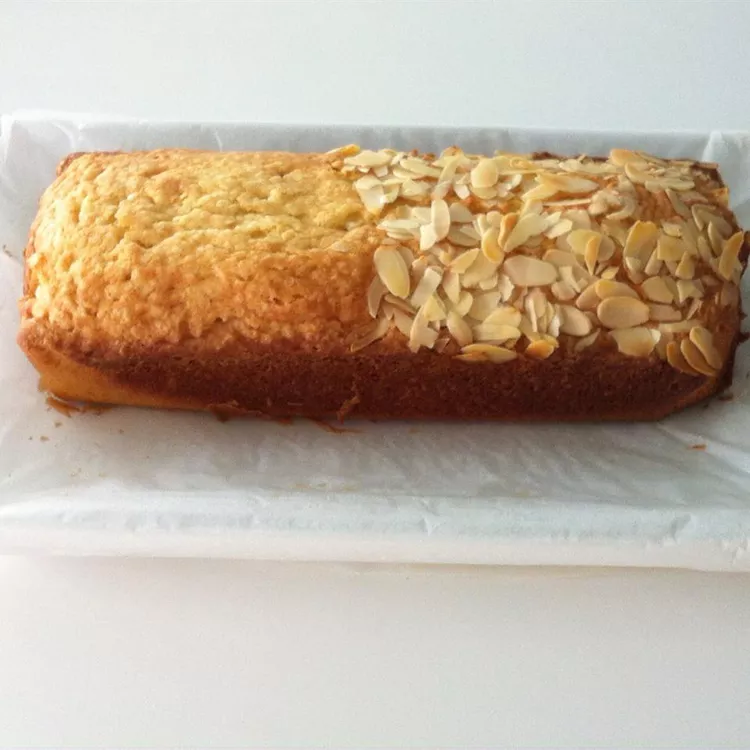

Almond Bread
Back to home page

Description
This is a really good, moist Scandinavian cake made in a loaf pan. You can
put shredded almonds in the bottom of the pan before you pour the mixture
into pan.
Ingredients
- ½ cup butter
- 1 ¼ cups white sugar
- 1 egg
- ½ teaspoon baking powder
- 1 ½ teaspoons almond extract
- ⅔ cup heavy cream
- 1 ¼ cups all-purpose flour
Steps
-
Preheat an oven to 350 degrees F (175 degrees C). Line a loaf pan with
wax paper, then spray with cooking spray.
-
Place the butter into a heavy saucepan, and melt over medium heat. Allow
the butter to simmer until foam rises to the top of the butter, 5 to 10
minutes. Gently skim away the foam and discard; pour the golden, clear
layer of butter through a fine mesh strainer into a bowl to remove
remaining milk solids, avoiding pouring any milk solids left in the
bottom of the pan. Allow the clarified butter to cool.
-
Beat sugar and egg with an electric mixer in a large bowl until light
and fluffy. Beat in the baking powder and almond extract. Stir in the
clarified butter. Pour in the flour alternately with the cream in 2 or 3
installments, mixing until just incorporated. Pour batter into prepared
pan.
-
Bake in the preheated oven until a toothpick inserted into the center
comes out clean, 50 to 60 minutes. Cool in the pan for 15 minutes before
removing to cool completely on a wire rack.
I'm not the recipe's author!
Visit the recipe's source page.
Back to home page